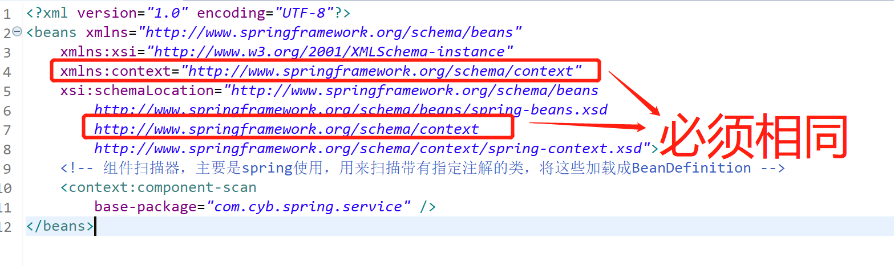
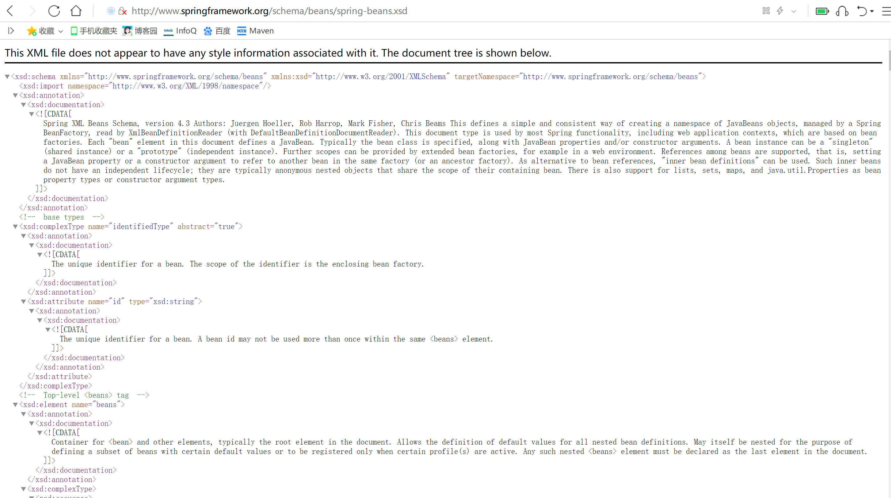

首先报这个错误，你得明白，是什么原因导致的？
答：未引入命名空间，和约束文件
解决方法：
<?xml version="1.0" encoding="UTF-8"?>
<beans xmlns="http://www.springframework.org/schema/beans"
xmlns:xsi="http://www.w3.org/2001/XMLSchema-instance"
xmlns:context="http://www.springframework.org/schema/context"
xsi:schemaLocation="http://www.springframework.org/schema/beans
http://www.springframework.org/schema/beans/spring-beans.xsd
http://www.springframework.org/schema/context
http://www.springframework.org/schema/context/spring-context.xsd">
<!-- 组件扫描器，主要是spring使用，用来扫描带有指定注解的类，将这些加载成BeanDefinition -->
<context:component-scan base-package="com.cyb.spring.service" />
</beans>标签中加上
<!--命名空间-->
xmlns:context="http://www.springframework.org/schema/context"
<!--别名和约束文件-->
xsi:schemaLocation="http://www.springframework.org/schema/context
http://www.springframework.org/schema/context/spring-context.xsd"
约束文件的话，请看：http://www.springframework.org/schema/beans/spring-beans.xsd
<!--别名-->
http://www.springframework.org/schema/context
<!--公网地址-->
http://www.springframework.org/schema/context/spring-context.xsd
若不加上命名空间的话bean得这样写
<beans:bean id="" class=""></beans>